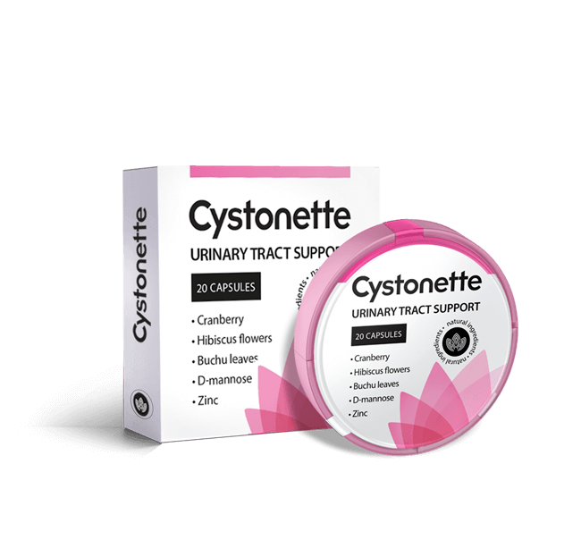

-
NATÜRLICHES MEDIKAMENT GEGEN DIE BLASENENTZÜNDUNGCystonetteStarten Sie jetzt ein gesundes
Leben ohne Blasenentzündung! Beseitigt effektiv und sicher die Ursachen der BlasenentzündungBildet eine natürliche Barriere gegen
Beseitigt effektiv und sicher die Ursachen der BlasenentzündungBildet eine natürliche Barriere gegen
entzündliche ProzesseInnovative Formel, hat keine Analoga
Über die Blasenentzündung
Mehr
Was ist eine Blasenentzündung?
Blasenentzündung – die häufigste Harnwegsinfektion, ist ein entzündlicher Prozess in
der Blasenschleimhaut.

Mehr
Was verursacht eine Blasenentzündung?
In 90% der Fälle wird eine Blasenentzündung durch das Bakterium Escherichia coli
verursacht, das auch als Kolibakterium bekannt ist.

Mehr
Was löst eine Blasenentzündung aus?
- Missachtung persönlicher Hygiene
- Unterkühlung
- Bewegungsmangel
- Häufiger Partnerwechsel,
ungeschützter Sex

Mehr
Wie kommt eine Blasenentzündung zum Vorschein?
- Starke Schmerzen im
Perineum und dem Schambereich - Verstärkter Harndrang
- Ständiger Harndrang,
Harninkontinenz


Jede
2
Frau wird jährlich
mit dem Problem der Blasenentzündung
konfrontiert
mit dem Problem der Blasenentzündung
konfrontiert
Etwa
63
Prozent der Fälle
gehen in eine chronische und
wiederkehrende Form über
gehen in eine chronische und
wiederkehrende Form über
Mehr als in
76
Prozent der Fälle
rufen synthetische Medikamente
gegen die Blasenentzündung
Komplikationen und Nebenwirkungen
!
rufen synthetische Medikamente
gegen die Blasenentzündung
Komplikationen und Nebenwirkungen
!


 100% natürliche
100% natürliche
und sichere Zusammensetzung
 Neueste Entwicklung
Neueste Entwicklung
des Jahres!
 Mehr als 2 000 000
Mehr als 2 000 000
zufriedene Käufer!
NEHMEN SIE DIE BLASENENTZÜNDUNG
DAMIT UNTER KONTROLLE
DAMIT UNTER KONTROLLE
Cystonette - ein einzigartiges Medikament auf dem Markt, bei dem es sich um einen Komplex aus antiadhäsiver und moderner Kräutermedizin handelt
100% natürlicheund sichere Zusammensetzung
Neueste Entwicklungdes Jahres!
Mehr als 2 000 000zufriedene Käufer!

Wie funktioniert Cystonette?
SCHRITT 1 Cystonette lindert schnell
die Symptome und erhöht die
Effektivität der
Antibiotikatherapie
die Symptome und erhöht die
Effektivität der
Antibiotikatherapie
SCHRITT 2 Cystonette blockiert,
entfernt Bakterien
und verhindert
eine Bildung von behandlungsresistenten
Blasenentzündungen
entfernt Bakterien
und verhindert
eine Bildung von behandlungsresistenten
Blasenentzündungen
SCHRITT 3 Cystonette reduziert
signifikant die Wahrscheinlichkeit
eines Rückfalls und des Übergangs
von einem akuten Zustand zu einem
chronischen Zustand
signifikant die Wahrscheinlichkeit
eines Rückfalls und des Übergangs
von einem akuten Zustand zu einem
chronischen Zustand

Vorteile von Cystonette
1
Fördert die Ausscheidung
von Kolibakterien
aus den Harnwegen
von Kolibakterien
aus den Harnwegen
4
Stört nicht dienormalen
und physiologischen Prozesse:
hat keinen Einfluss auf den Stoffwechsel von Zucker,
übt keine Auswirkungen auf die Leber aus
und physiologischen Prozesse:
hat keinen Einfluss auf den Stoffwechsel von Zucker,
übt keine Auswirkungen auf die Leber aus
2
Übt eine gerichtete Wirkung
auf die Harnwege
des Körpers aus
auf die Harnwege
des Körpers aus
5
Hat ein Minimuman Nebenwirkungen
, ist gut verträglich
, ist gut verträglich
3
Übt keine Auswirkungenauf die eigene Mikroflora
des Darms und des Urogenitalsystems –
verursacht keine Candidiasis und
keine Dysbakteriose
des Darms und des Urogenitalsystems –
verursacht keine Candidiasis und
keine Dysbakteriose
6
Effektivsowohl bei einer komplexen Behandlung
von akuter und chronischer
Blasenentzündung, Urethritis als auch zur
Vorbeugung von Rückfällen
von akuter und chronischer
Blasenentzündung, Urethritis als auch zur
Vorbeugung von Rückfällen
Wann wird Cystonette benötigt?

und einer komplexen Therapie
einer chronischen und akuten
Blasenentzündung
Zur Vorbeugung
von Rückfällen der Blasenentzündung
von Rückfällen der Blasenentzündung

der Prämenopause und in den
Wechseljahren

Erkrankungen benachbarter
Organe und Systeme

REDUZIERT DAS RISIKO DER
BLASENENTZÜNDUNG
BEI:
BLASENENTZÜNDUNG
BEI:
- Unterkühlung
- Körperliche Inaktivität
- häufigem Wechsel von Sexualpartnern,
ungeschütztem Geschlechtsverkehr - Tragen enger Unterwäsche
- verminderter Immunität, Hypovitaminose
und Überlastung - Schlechter persönlichen Hygiene
- Vorhandensein von Fremdkörpern
in der Harnblase (Steine, Zystostomie, Stents)
Wie anfällig sind Sie für
eine Blasenentzündung?
eine Blasenentzündung?
Frage-Antwort
Ist eine Blasenentzündung sehr
gefährlich?
Vergeht es vielleicht von selbst?
Vergeht es vielleicht von selbst?
Antwort:
Eine Blasenentzündung kann nicht leicht genommen werden, da Bakterien
mangels einer Therapie oder mangelnder Wirksamkeit in die Nieren gelangen und eine Pyelonephritis
und eine chronische Blasenentzündung verursachen können. Sie müssen so schnell wie möglich mit der
Behandlung beginnen, sobald erste Anzeichen einer Blasenentzündung vorliegen! Wenn Sie Symptome
wie Rückenschmerzen, Fieber oder Blut im Urin haben, wenden Sie sich sofort an Ihren Arzt.

Was kann bei Rückfällen der Blasenentzündung helfen?
Antwort:
Häufige Rückfälle von Blasenentzündungen sind in der Regel mit zwei Ursachen
verbunden. 1. Ein Teil der Bakterien bleibt nach der Behandlung in der Blase in der inaktiven Form
und vermehrt sich unter günstigen Bedingungen und verursacht eine Verschlimmerung der
Blasenentzündung. 2. Bei Missachtung persönlicher Hygiene oder aufgrund anatomischer Merkmale
kommt es zu einer erneuten Infektion. Die Lösung für diese Probleme kann ein Behandlungskurs eines
Arzneimittels sein - es wird dazu beitragen, einen Rückfall der Blasenentzündung zu verhindern.

Ist die Blasenentzündung eine Erkältung?
Antwort:
Nein, die Ursache der Blasenentzündung ist eine Infektion der Harnwege.
Unterkühlung, Erkältungen, die die Abwehrkräfte des Körpers schwächen, tragen zur Entwicklung der
Krankheit bei. Aber sie sind nicht ihre Ursache. Die Ursache der Krankheit sind Mikroorganismen,
die im Harntrakt eingeschlossen sind. In den meisten Fällen sind Kolibakterien die
Infektionserreger.

Was ist die Pyelonephritis und wie unterscheidet sie sich von einer
Blasenentzündung??
Antwort:
Die Pyelonephritis ist eine entzündliche Nierenerkrankung, die von starken
Schmerzen in der Lendengegend und hohem Fieber begleitet wird. Und die Blasenentzündung ist eine
Entzündung der Blase. Die Pyelonephritis tritt sehr häufig bei fortgeschrittener chronischer
Blasenentzündung auf, wenn Bakterien durch die Harnleiter in die Nieren eindringen und dort
Entzündungen verursachen. Es ist sehr wichtig, Blasenentzündungen wirksam und schnell zu behandeln
und noch besser zu verhindern, dass sie erneut auftreten.
Lässt sich eine Blasenentzündung behandeln?
Antwort:
Diese Krankheit lässt sich viel schlimmer behandeln und die
Wahrscheinlichkeit einer Verschärfung bleibt lebenslang bestehen. Wenn jedoch vorbeugende
Maßnahmen ergriffen werden, um das Wachstum von Bakterien in der Blase zu verhindern wird die
Wahrscheinlichkeit eines Rückfalls minimiert. Für die Behandlung einer chronischen
Blasenentzündung sind zwei Behandlungszyklen erforderlich. Hinzu wird empfohlen 2-3 Mal pro Jahr
vorbeugende Maßnahmen zu ergreifen.
Was sagen Experten
Eine rechtzeitige Behandlung und Vorbeugung von Blasenentzündungen mit Hilfe
von
Cystonette
hilft, die Entwicklung vieler Komplikationen,
den Übergang der Krankheit in eine chronische Form
und das Auftreten anderer urologischer Erkrankungen zu vermeiden.
Wir empfehlen Cystonette sowohl Frauen als auch Männern
in jedem Alter, die zuvor mit
dem
Problem der Blasenentzündung konfrontiert wurden,
sowie denjenigen, die anfällig
für diese
Krankheiten sind.
Die Verwendung von Cystonette erfordert keine Rücksprache
mit einem Arzt, wird ohne Rezept abgegeben und eignet sich perfekt
für die Anwendung zu Hause.
mit einem Arzt, wird ohne Rezept abgegeben und eignet sich perfekt
für die Anwendung zu Hause.

Sie können Cystonette erwerben oder sich kostenlos beraten lassen, indem Sie das
folgende
Formular ausfüllen